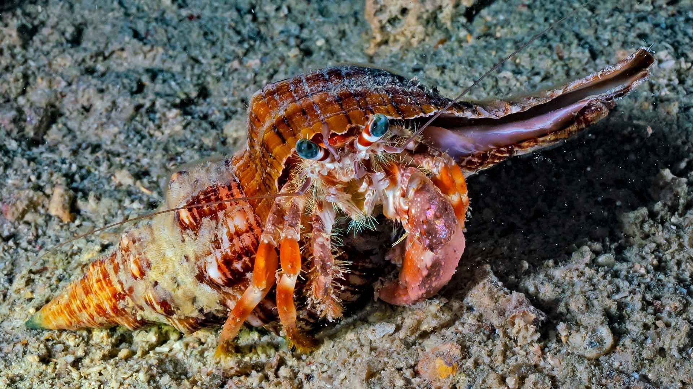

Crustaceans any member of the subphylum Crustacea (phylum Arthropoda), a group of
invertebrate animals consisting of some 45,000 species distributed worldwide.
Feature Correlation
Color Histograms
Color-Histograms Analysis
for RGB Channels

Shape Feature
Shape-Feature Analysis
using Hu Moments
Texture Feature
Texture-Feature Analysis
using Local-Binary-Pattern
Let's Extract Features!
Extract feature using K-Means Clustering
K-means clustering is a popular unsupervised machine
learning algorithm used for partitioning a dataset into a
pre-defined number of clusters. It is a technique used to
organize data into groups based on their similarity. After
clustering, plot and visualize the findings using PCA 2D, a
linear dimensionality reduction technique in data analysis.
Click the figure for interpretation
Build, Train, and Evaluate a Model!
Create a model using Tensorflow
A Convolutional Neural Network (CNN) is a type of
supervised deep learning technique commonly used in
computer vision. TensorFlow is an open-source platform
for machine learning using data flow graphs.